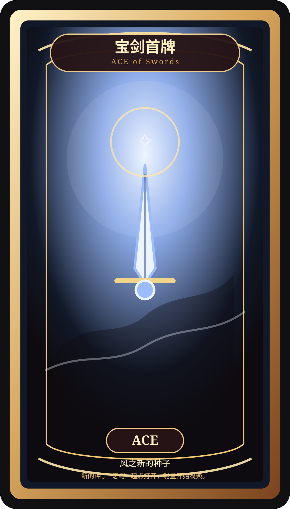
宝剑首牌
ACE of Swords · 新的种子
Swords · 风元素小阿尔卡那

ACE of Swords · 新的种子
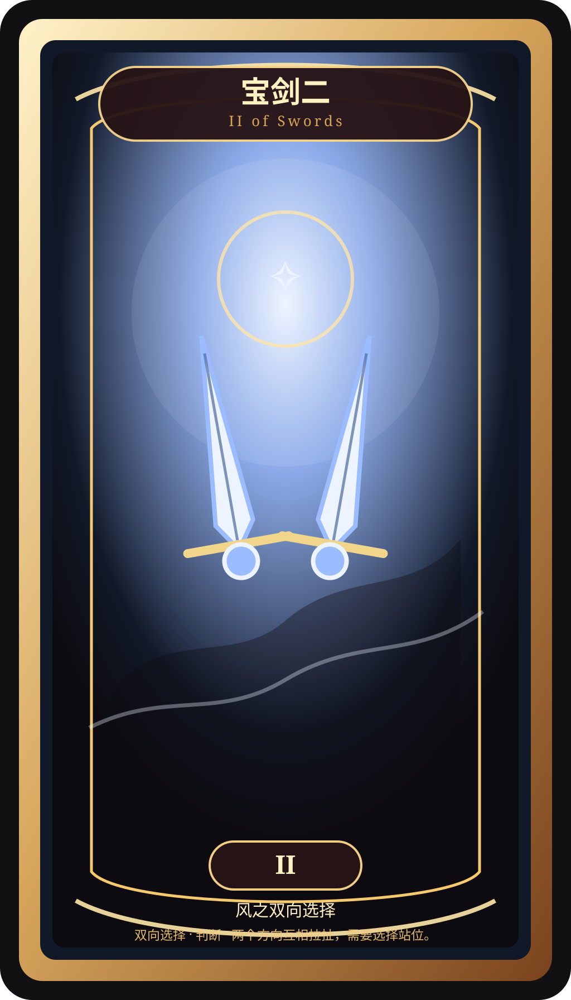
II of Swords · 双向选择
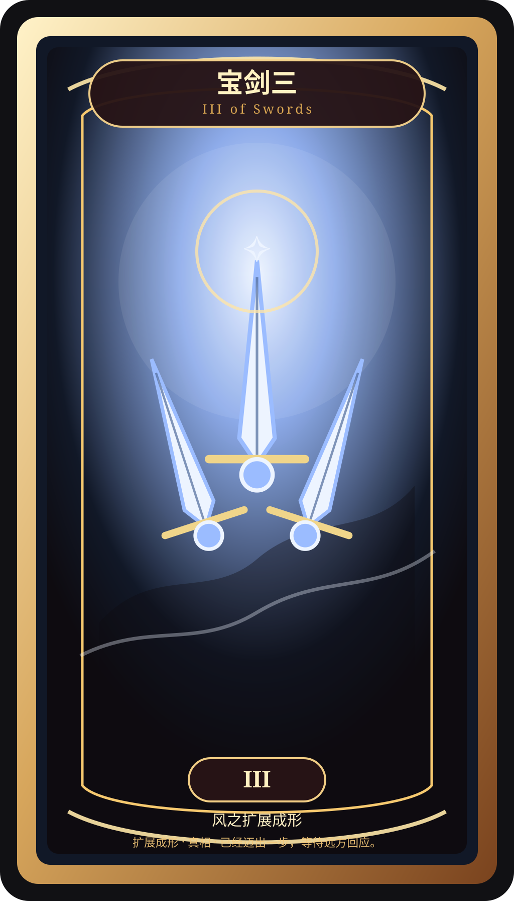
III of Swords · 扩展成形
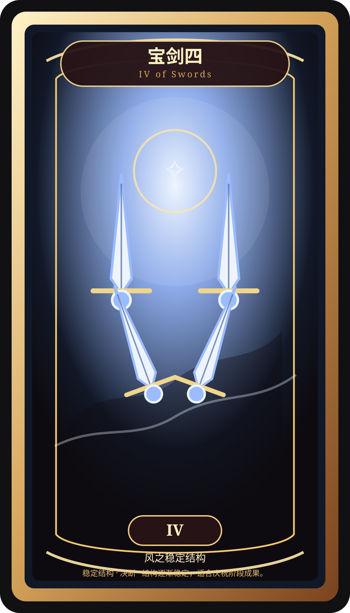
IV of Swords · 稳定结构
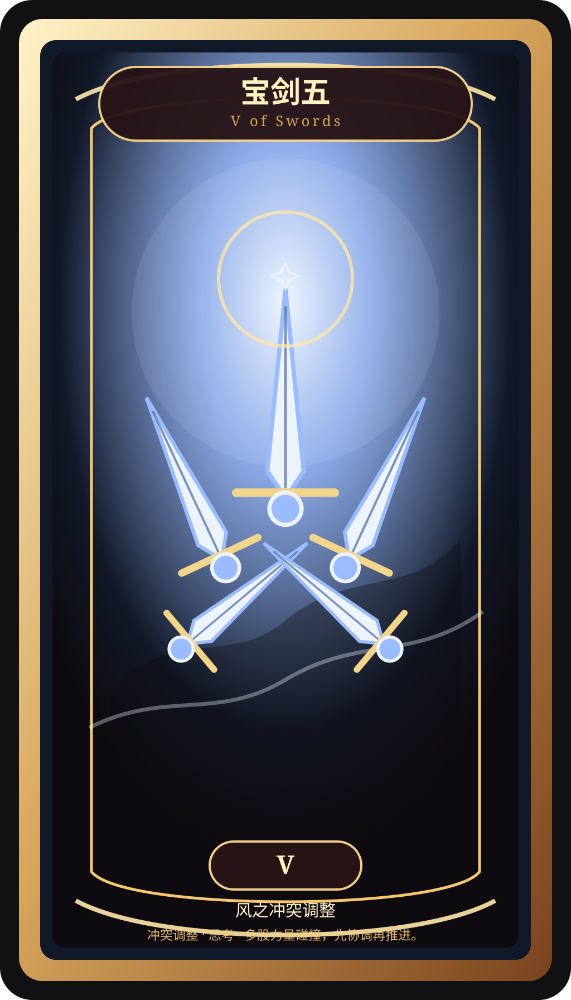
V of Swords · 冲突调整
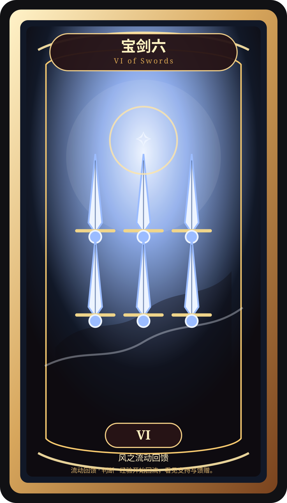
VI of Swords · 流动回馈
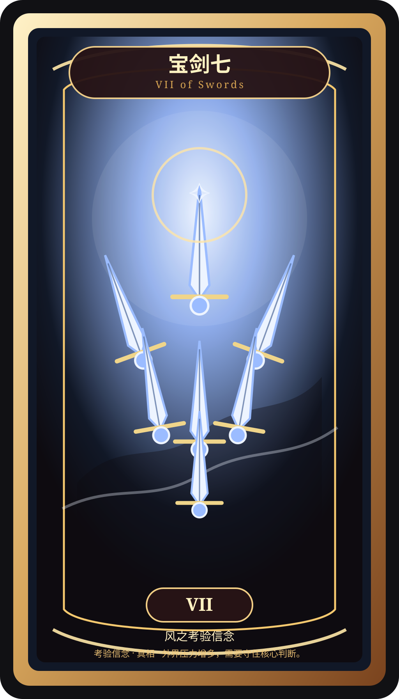
VII of Swords · 考验信念
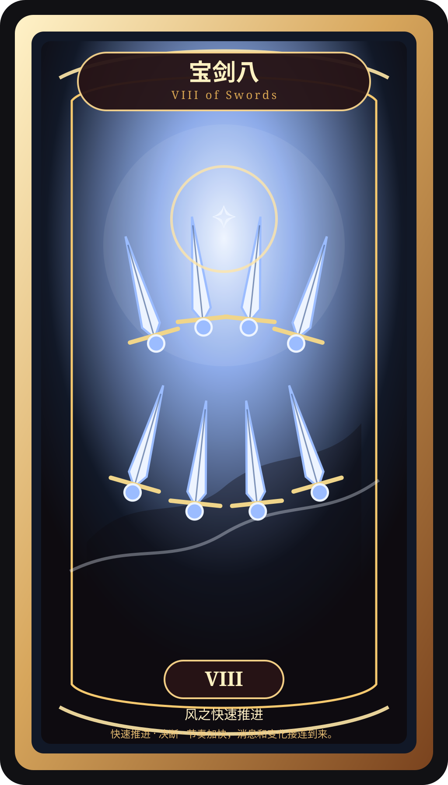
VIII of Swords · 快速推进
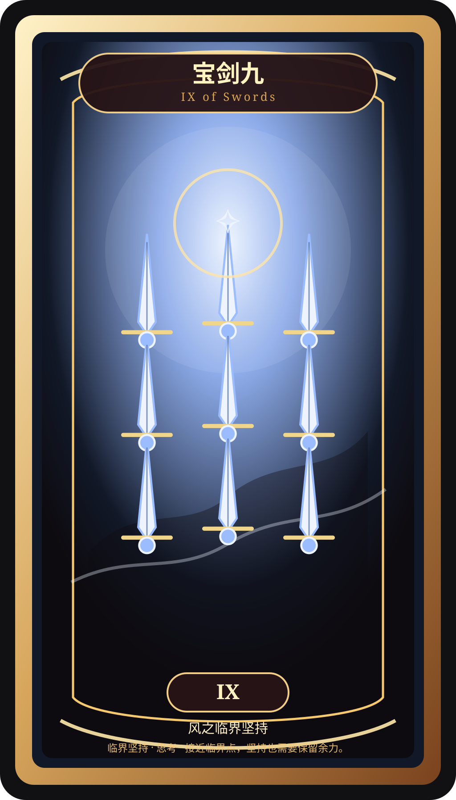
IX of Swords · 临界坚持
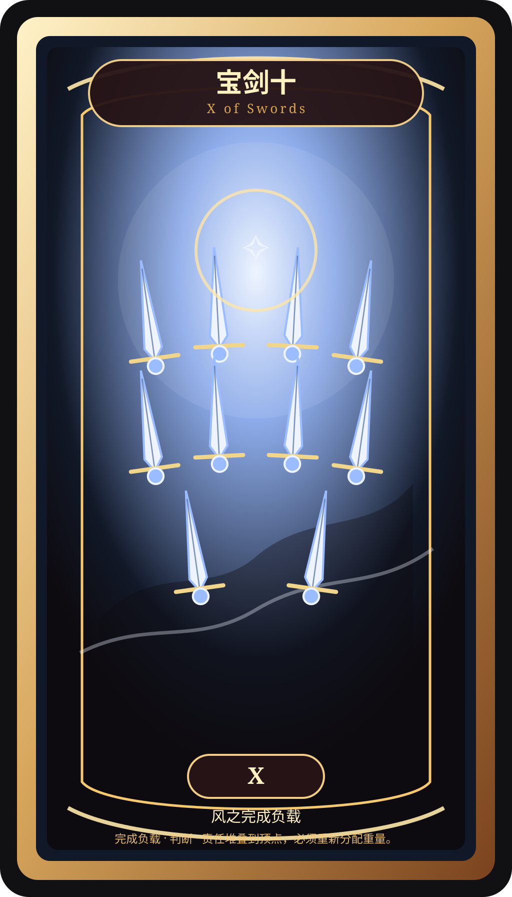
X of Swords · 完成负载
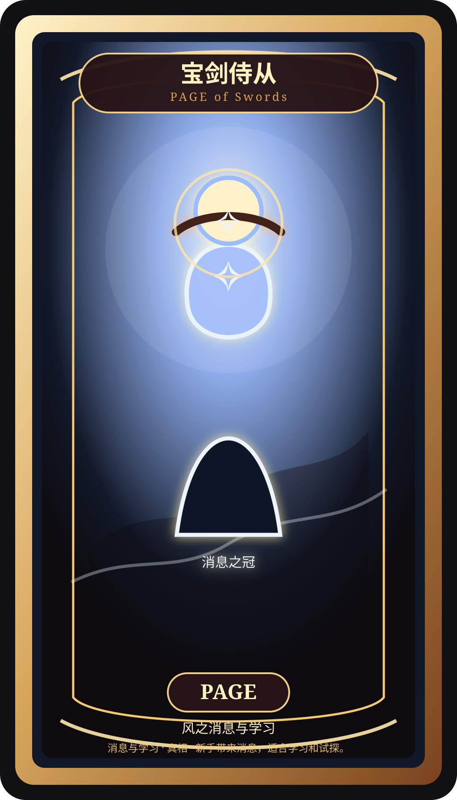
PAGE of Swords · 消息与学习
KNIGHT of Swords · 行动与追逐
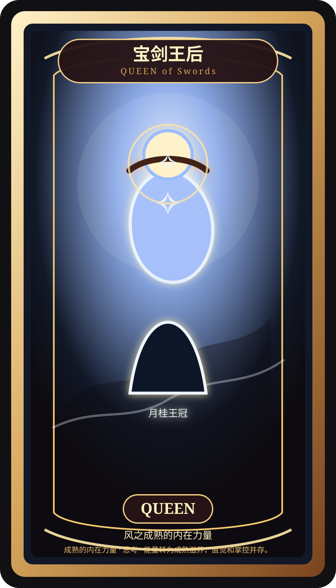
QUEEN of Swords · 成熟的内在力量
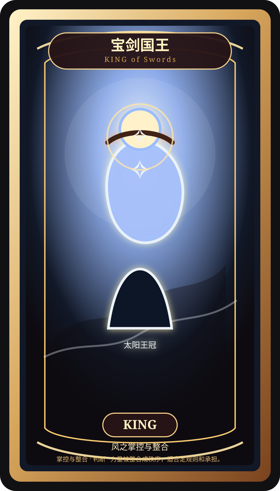
KING of Swords · 掌控与整合